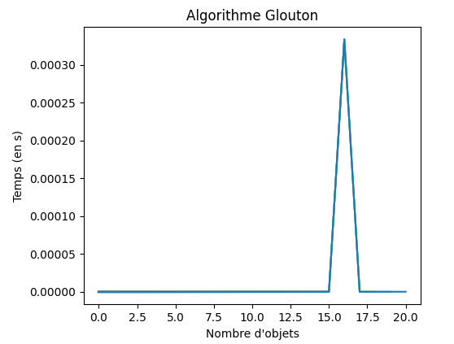

Algorithmes Gloutons
D'après pixees.fr
Problèmes d'optimisations
Le problème du sac à dos
Le problème du sac à dos (KP ou Knapsack Problem)
Un cambrioleur possède un sac à dos d'une contenance maximum de 30 Kg. Au cours d'un de ses cambriolages, il a la possibilité de dérober 4 objets A, B, C et D. Voici un tableau qui résume les caractéristiques de ces objets :
| Objet | A | B | C | D |
|---|---|---|---|---|
| Masse | 13 Kg | 22 Kg | 8 Kg | 10 Kg |
| Valeur | 700 € | 400 € | 300 € | 300 € |
- Déterminez les objets que le cambrioleur aura intérêt à dérober, sachant que :
- tous les objets dérobés devront tenir dans le sac à dos (30 Kg maxi) ;
- le cambrioleur cherche à obtenir un gain maximum.
- Existe-t-il d'autres solutions ?
Optimisation
Ce genre de problème est un grand classique en informatique, on parle de problèmes d'optimisation.En effet on cherche une solution dite optimale (dans notre exemple on cherche le plus grand gain possible). Souvent, dans les problèmes d'optimisation, il n'existe pas une solution optimale, mais plusieurs solutions optimales, et résoudre un problème d'optimisation c'est donc trouver une de ces solutions.
Solution naïve
Comment faire pour tester toutes les solutions possibles, sachant que la liste des objets est donnée sous la forme d'un dictionnaire (ou d'une liste de dictionnaire), où chaque objet est représenté par deux clés masse et valeur ?
La solution est de créer une liste de tous les sous-ensembles possibles à partir d'une donnée d'objets, puis de calculer pour chacun de ces sous-ensemble la masse et la valeur totale...
Une idée est, pour une liste d'objets donnée de taille \(n\), de comprendre que tous les nombres entiers entre \(0\) et \(2^n-1\) sont associés à un unique sous-ensemble de cette liste.
Par exemple, considérons la liste [A, B, C].
- pour le sous-ensemble
[A, C], on va considérer le nombre binaire101, où le premier1(celui de poids faible, donc à droite) représente la présence deAdans cet ensemble, le0représente l'absence deB, et le dernier1représente la présence deC. - de même pour le sous-ensemble
[A, B], on associe le nombre binaireO11; - de même pour le sous-ensemble
[C], on associe le nombre binaire100; - et pour
[A,B,C]on associe le nombre binaire111, qui est donc le plus grand nombre binaire pouvant représenter un sous-ensemble de[A, B, C]. Or \((111)_2 = 7 = 2^3 -1\).
Donc, pour essayer toutes les possibilités (algorithme en force brute), on doit :
- Faire une boucle pour
iallant de \(0\) à \(2^n -1\) ; - pour chaque valeur de
i, déterminer le nombre binaire correspondant et utiliser cette décomposition pour trouver quels objets font partie de ce sous-ensemble ; - déterminer ensuite la masse totale de ce sous-ensemble ;
- si cette masse est inférieure au seuil de masse fixé, on calcule la valeur totale des objets de ce sous-ensemble;
- si cette valeur totale est supérieure à la valeur maximale jusqu'alors traitée, ce sous-ensemble devient la meilleure solution pour l'instant.
Une fois la boucle terminée, on est assuré d'avoir la solution optimale au problème du sac à dos.
def make_obj_sub_list_from_list_and_int(obj_list : list, nb : int) :
""" return a sublist created with a number between
0 and 2**n where n is len(obj_list)"""
i = 0
return_list = []
while nb != 0 :
if nb%2 == 1 :
return_list.append(obj_list[i])
i += 1
nb = nb//2
return return_list
def sacADosNaif(listeObj : dict, masseMax : int) -> list :
""" Calcule la solution optimale pour le problème du sac à dos"""
optimale = []
valeurOptimale = 0
n = len(listeObj)
for nb in range(2**n) :
se = make_obj_sub_list_from_list_and_int(list(listeObj.keys()), nb)
masseLocale = sum([listeObj[nom]['masse'] for nom in se])
valeurLocale = sum([listeObj[nom]['valeur'] for nom in se])
if valeurLocale >valeurOptimale and masseLocale<=masseMax :
valeurOptimale = valeurLocale
optimale = se
return optimale, valeurOptimale
Temps de calcul
Dans notre cas précis, avec seulement 4 objets, il est tout à fait possible de tester toutes les solutions pour trouver celle optimale.Mais avec un plus grand nombre d'objets, le temps de calcul, même pour un ordinateur très puissant, deviend très rapidement trop important. En effet l'algorithme qui testerait toutes les combinaisons possibles aurait une complexité en temps en \(\mathrm{O}(a^n)\) avec \(a\) une constante et \(n\) le nombre d'objets (\(a\) vaut au moins \(2\), car il faut explorer les \(2^n\) sous-ensembles).
On parle dans ce cas d'une complexité exponentielle (en temps), ce qu'on peut voir dans le graphique suivant (exécuté sur mon ordinateur personnel).
Les algorithmes à complexité exponentielle ne sont pas efficaces pour résoudre des problèmes, le temps de calcul devenant beaucoup trop important quand \(n\) devient grand.
Une solution gloutonne
Solution « Gloutonne »
La résolution d'un problème d'optimisation se fait généralement par étapes : à chaque étape on doit faire un choix. Par exemple, dans le problème du sac à dos, nous ajoutons les objets un par un, chaque ajout d'un objet constitue une étape : à chaque étape on doit choisir un objet à mettre dans le sac.
Le principe de la méthode gloutonne(greedy en anglais) est, à chaque étape de la résolution du problème, de faire le choix qui semble le plus pertinent sur le moment, avec l'espoir qu'au bout du compte, cela nous conduira vers une solution optimale du problème à résoudre. Autrement dit, on fait des choix localement optimaux, ce qui signifie faire le choix qui semble le plus pertinent ponctuellement. Par contre, rien ne garantit que la solution obtenue soit optimale, elle sera simplement «assez bonne».
Méthode gloutonne
Comme on cherche à optimiser au maximum le gain, on va s'intéresser à la « valeur massique » de chaque objet.
-
Compléter le tableau suivant :
Objet A B C D Valeur Massique (en €/Kg) -
Trier le tableau par valeur décroissante de la valeur massique.
- Enfin, on remplit le sac en prenant les objets dans l'ordre et en s'arrêtant dès que la masse limite est atteinte.
- Quelle est la composition du sac ?
- Est-elle optimale ?
Comparaison des temps d'exécution entre algorithme naïf et algorithme glouton
Sur les mêmes valeurs, voici une comparaison entre les temps d'éxécution des deux algorithmes :

ATTENTION Il faut bien comprendre que l'algorithme glouton ne donne pas forcément la même réponse que l'algorithme naïf, c'est-à-dire la solution optimale ! Cependant les différences de temps d'exécution lorsque \(n\) est suffisamment grand sont telles que la solution approchée donnée par une méthode gloutonne est bien souvent acceptable.
Code en Python
La liste des objets et leur masse est donné par un dictionnaire nom : (masse; valeur).
objets = {
"A" : {'masse' : 13, 'valeur' : 700},
"B" : {'masse' : 12, 'valeur' : 400},
"C" : {'masse' : 8, 'valeur' : 300},
"D" : {'masse' : 10, 'valeur' : 300},
}
- Ecrire une fonction Python qui renvoie un tableau de tuples
(nom ; valeur_massique)à partir du dictionnaire passé en argument. - Trier ce tableau par ordre décroissant des valeurs massiques.
- Ecrire une fonction Python qui finalise l'algorithme glouton.
Problème du rendu de monnaie
La situation
Le problème du rendu de monnaie
Nous sommes des commerçants, nous avons à notre disposition un nombre illimité de pièces de :
- 1 centime
- 2 centimes
- 5 centimes
- 10 centimes
- 20 centimes
- 50 centimes
- 1 euro
- 2 euros
Nous devons rendre la monnaie à un client à l'aide de ces pièces. La contrainte est d'utiliser le moins de pièces possible.
L'algorithme
- Trouvez une méthode gloutonne permettant d'effectuer un rendu de monnaie (en utilisant le moins possible de pièces).
- Vous devez rendre la somme de 2,63 €.
- Appliquez la méthode que vous venez de mettre au point.
- Combien de pièces avez-vous utilisées ?
- La solution trouvée est-elle optimale ?
- Vous devez rendre la somme de 4,05 €.
- Appliquez la méthode que vous venez de mettre au point.
- Combien de pièces avez-vous utilisées ?
- La solution trouvée est-elle optimale ?
Le code
À partir de la méthode gloutonne que vous avez élaborée ci-dessus, écrivez un algorithme glouton qui permettra de déterminer le nombre minimal de pièces à utiliser pour une somme donnée. Vous proposerez ensuite une implémentation en Python de votre algorithme. Vous testerez votre programme avec une somme à rendre de 2 euros et 63 centimes.
Autres systèmes de monnaie
Le problème du rendu de monnaie est NP-complet dans le cas général, c'est-à-dire très difficile à résoudre. Cependant pour certains systèmes de monnaie dits canoniques, l'algorithme glouton est optimal, c'est-à-dire qu'il suffit de rendre systématiquement la pièce ou le billet de valeur maximale — ce tant qu'il reste quelque chose à rendre. C'est la méthode employée en pratique, ce qui se justifie car la quasi-totalité des systèmes ayant cours dans le monde sont canoniques.
Dans un système de monnaie non-canonique ne possédant que 3 pièces de valeurs 1, 3 et 4, quelle est la solution optimale du problème du rendu de monnaie pourt une valeur de 6 ? Que donne l'algorithme glouton ?
Pour les cracks
Pour ceux intéressés, voici les fichiers permettant de visualiser la comparaison entre les méthodes :
-
NREPcorrespond au nombre maximum d'objets testés ;LISSAGEcorrespond au nombre de répétitions effectuées pour lisser les résultatsFACTEUR_TAILLEcorrespond à la taille du sac à dos (dépend du nombnre d'objets).
Ce fichier crée un fichier binaire
compareGreedyNatural.datqui contient les données de temps des méthodes naives et gloutonnes, utilisées par le fichier suivant. -
plotCompare.py permet d'obtenir une animation matplotlib comparant les méthodes.